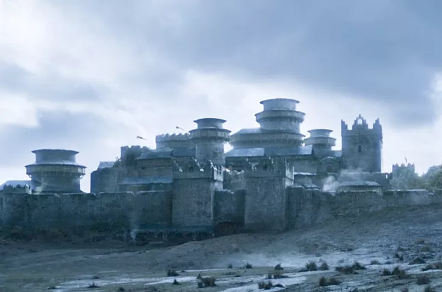
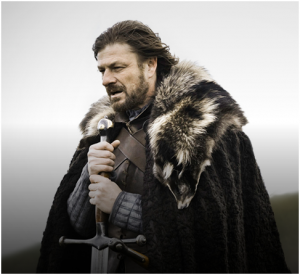
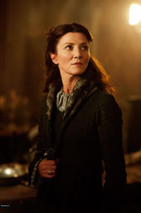
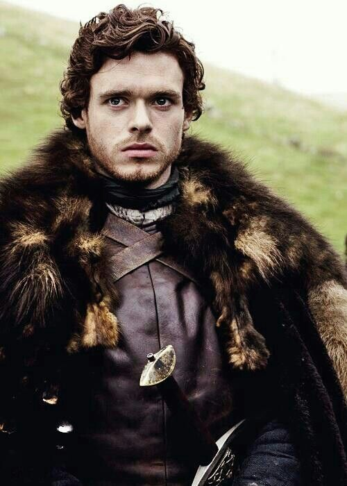
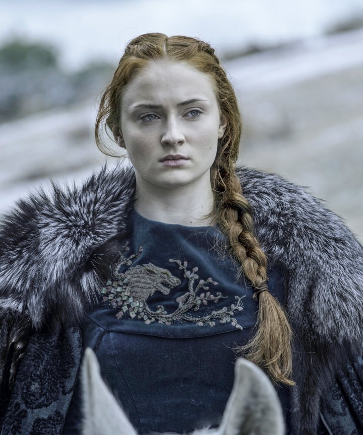
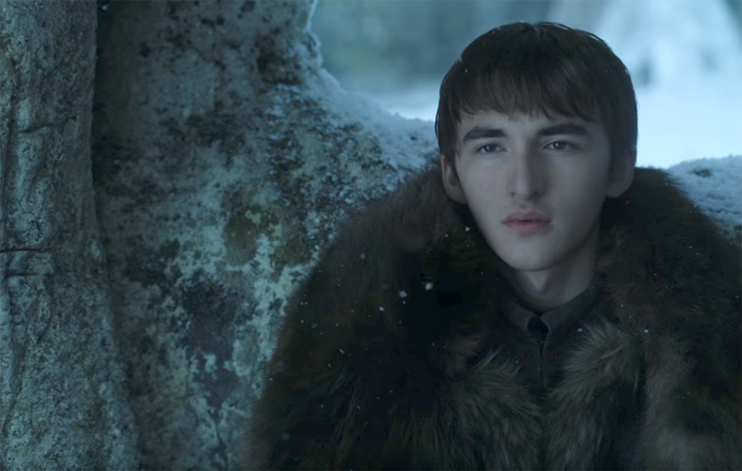
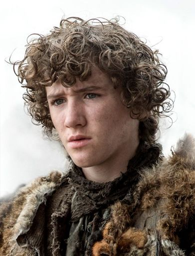
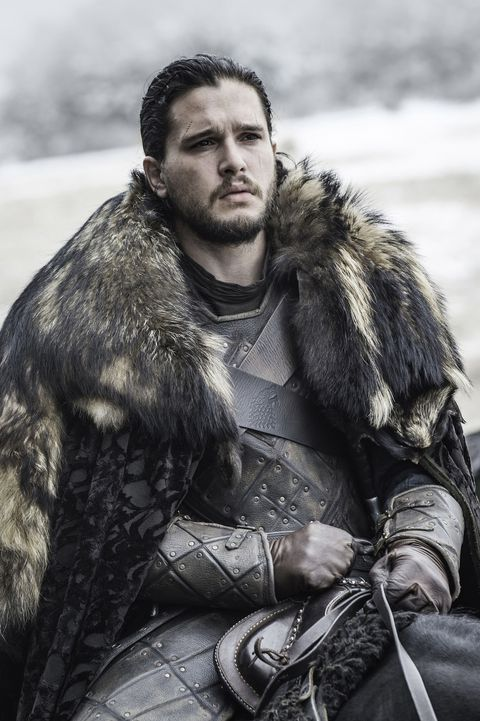

House Stark is one of the great houses of the Seven Kingdoms. It is the main house in the North. All the houses in the North are loyal to the Starks for they are the most honorable house in the North and the Seven Kingdoms that is. But we'll get into that later.

Eddard Stark, Ned, is the Head of House Stark. He is deemed Warden of the North, being that his House is the most prominent. His loyalty and honor is incomparable to any one in the realm. Many and if not all may be scared of that. But why? Maybe because they're all grimy...

Catelyn Tully is wife to Eddard Stark. Like her husband, she is honorable. She takes her house's words very seriously, being "Family, Duty, Honor". She will by any means necessary, protect her family.

Robb Stark is the eldest of the 5 Stark children. Loyalty and honor seems an ongoing theme in the House Stark family. This being said Robb takes after his father's devotion to honor. He also is a justifiable man meaning he will do what seems right.

Sansa Stark is the second eldest of the Stark children. She is seen as naive and feminine. Under that she is strong and brave and will do anything to survive the game of thrones.

Arya is the third of the Stark children. She has the long face, dark hair, and gray eyes of the Starks, whereas her siblings, Robb, Sansa, Bran, and Rickon inherited the thick auburn hair and blue eyes of the Tully. Unlike her sister Sansa, she is seen as a rebel. She has interests in fighting and combat. She has a feisty personality and will do anything to get revenge..

Brandon Stark, Bran, is the second to last child of the Starks. He is very adventurous. This led to his accident that was caused by the grimy.. we'll get to that later. Like his family is dutiful but he is also stubborn. His curiosity and stubbornness often gets the best of him.

Rickon Stark is the yougest Stark child. He has a short temper. But he is playful and stubborn. He is often seen with his dire wolf, Shaggydog.

Jon Snow is said to be Ned Stark's bastard son. He has the Stark look. He keeps to himself and is very observant. He hates being a bastard which pushes him to show he is honorable as the house he is apart of.
